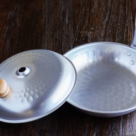

← All recipes
Oyakodon (Chicken and Egg Rice Bowl)

Servings: Servings: 2 · Prep: 15 mins · Cook: 10 mins
Ingredients
- ½ onion (4 oz, 113 g; peeled)
- 10 oz boneless, skinless chicken thighs (typically 1–2 thighs; use plant-based meat substitute for vegan/vegetarian)
- 1 Tbsp sake (for marinating the chicken; substitute with Chinese rice wine or dry sherry, or omit)
- 3-4 large eggs (50 g each w/o shell) (at room temperature; for vegan/vegetarian, use egg substitute such as JUST Egg)
- For the Seasonings:
- ½ cup dashi (Japanese soup stock) (use standard Awase Dashi, dashi packet or powder, or Vegan Dashi)
- 2 Tbsp soy sauce
- 2 Tbsp mirin
- 2 tsp sugar
- For Serving
- 2 servings cooked Japanese short-grain rice (typically 1⅔ cups (250 g) per donburi serving)
- 4 sprigs mitsuba (Japanese parsley) (or green onion/scallion)
- shichimi togarashi (Japanese seven spice) (optional)
- Japanese sansho pepper (optional)
Directions
- How to Make the Best Oyakodon
- Prepare the ingredients: Cut the onion, mitsuba/green onions, and chicken and crack the eggs.
- Cook the onion in the seasoning mixture.
- Add the chicken and cook until no longer pink.
- Drizzle egg mixture at two separate times. Garnish mitsuba/green onions.
- Spoon the finished dish over the bed of steamed rice in a donburi bowl.
- This recipe includes both cooking methods—using a medium frying pan (about 10 inches/25 cm) and an oyakodon pan or small frying pan (8 inches/20 cm). Typically, oyakodon is made individually for each serving using an oyakodon pan, which lets you slide the cooked ingredients onto the rice bowl easily. See the separate cooking instructions below.
- Gather all the ingredients. Do not make more than two servings in a medium frying pan. I explained a bit more in the blog post (under Oyakodon Cooking Tips). If you are making four servings, use two medium frying pans.
- To Prepare the Seasonings
- Combine ½ cup dashi (Japanese soup stock), 2 Tbsp soy sauce, 2 Tbsp mirin, and 2 tsp sugar in a bowl or a liquid measuring cup and mix all together until the sugar is dissolved.
- To Prepare the Ingredients
- Slice ½ onion lengthwise, about ¼ inch (6 mm) wide.
- Chop 4 sprigs mitsuba (Japanese parsley) ½ inch (1.3 cm) wide.
- Trim the extra bits of fat and connective tissue from 10 oz boneless, skinless chicken thighs with the knife.
- Cut the chicken thigh along the grain into strips ¾–1 inch (2–2.5 cm) wide. Next, angle your knife back and diagonally (nearly parallel to the cutting board), and then slice the chicken strips against the grain into pieces about ¾–1 inch (2–2.5 cm) square. This sogigiri cutting technique gives the chicken pieces equal thickness and creates more surface area for fast cooking and better absorption of the flavors.
- Transfer the chicken to a bowl or tray and sprinkle with 1 Tbsp sake. Set aside for 5 minutes.
- Crack 3-4 large eggs (50 g each w/o shell) into a bowl. Using a pair of chopsticks, lift the egg whites to “cut“ them 5–6 times into a few smaller clumps. This will prevent the egg whites from falling into the frying pan all at once. Do not whisk or beat the eggs together. Tip: Aim for high color contrast between the white and yellow parts of the eggs in your finished dish.
- While “cutting“ the egg whites, you may have accidentally broken some of the egg yolks. That‘s okay. If the yolks haven‘t broken yet, you can poke them to gently break them, but do not blend the egg whites and yolks. The eggs should resemble a marble pattern.
- To Cook the Oyakodon in a Medium Frying Pan
- With the stove off, add the sliced onions to a medium frying pan (I use a well-seasoned 11” carbon steel pan) in a single layer. Then, add the seasonings mixture. It should just cover the onions. If not, your frying pan is too big and you need to either increase the seasoning or use a smaller pan.
- Turn on the heat to medium and bring it to a simmer. Once simmering, add the chicken on top of the onions.
- Make sure the onions and chicken are evenly distributed. Once simmering again, lower the heat to medium low. Cook, uncovered, for 5 minutes or until the chicken is no longer pink and the onions are tender. Halfway through, flip the chicken. Tip: Evaporation reduces the sauce and intensifies the flavor.
- We will add the eggs in two stages: Two-thirds of the eggs first, then the remaining one-third later. Now, increase the heat to medium. With the cooking liquid simmering (small bubbles around the edges), drizzle two-thirds of the eggs in a circular pattern over the chicken and onions, avoiding the edges of the pan where the eggs can easily overcook. Tip: Only drizzle the eggs if the cooking liquid is simmering, as with Egg Drop Soup. Also, try to add more egg whites at this stage, as the whites take longer to cook than the yolks. Ideally, we want to keep the yolks soft and runny for the final presentation.
- If the heat is too strong, lower the heat. If the egg is moving toward the edges of the pan, gently gather it toward the center where the heat is not as strong. Optionally, you can cover the pan if the egg whites are taking a long time to set.
- When the eggs are still runny but just set, add the rest of the eggs to the center and around the edges of the pan. Add the mitsuba (or green onion) on top and cook on medium low until the egg is done to your liking. Usually, oyakodon in Japan is served while the egg is almost set but still runny (raw eggs are safe to consume in Japan). Tip: For the remaining one-third of the egg, try to distribute more egg yolks so the oyakodon will have a bright yellow color on top. For a good presentation, you can add a beaten extra yolk at the end.
- Serve steamed rice in individual serving bowls. Spoon the cooked chicken and egg mixture onto the steamed rice and drizzle the desired amount of pan sauce on top.
- Cook the chicken and egg in two batches, one serving at a time. Make sure to divide the ingredients in half. With the stove off, add half of the sliced onions to the pan in a single layer. Add half of the seasonings mixture (it should just cover the onions).
- Turn on the heat to medium and bring it to a simmer. Once simmering, add half of the chicken on top of the onions.
- Make sure the onions and chicken are evenly distributed. Once simmering, lower the heat to medium low. Cook, uncovered, for 4 minutes or until the chicken is no longer pink and the onions are tender. Halfway through, flip the chicken. Tip: Evaporation helps to reduce the sauce and intensify the flavor.
- We will add the eggs in two stages: Two-thirds of the eggs first, then the remaining one-third later. Now, increase the heat to medium. With the cooking liquid simmering (small bubbles around the edges), drizzle two-thirds of the eggs in a circular pattern over the chicken and onions, avoiding the edges of the pan where the eggs can easily overcook. Tip: Only add the eggs if the cooking liquid is simmering, as with Egg Drop Soup. Also, try to add more egg whites at this stage, as the whites take longer to cook than the yolks. Ideally, we want to keep the yolks soft and runny for the final presentation.
- When the eggs are still runny but just set, add the rest of the eggs to the center and around the edges of the pan. Add the mitsuba (or green onion) on top and cook on medium low until the egg is done to your liking. Usually, oyakodon in Japan is served while the egg is almost set but still runny (raw eggs are safe to consume in Japan). Tip: For the remaining one-third of the egg, try to distribute the egg yolk so the oyakodon will have a bright yellow color on top. For a good presentation, you can add a beaten extra yolk at the end.
- Portion 2 servings cooked Japanese short-grain rice into individual donburi or other serving bowls. Slide the cooked chicken and egg mixture onto the steamed rice and drizzle the desired amount of pan sauce on top. Repeat Steps 1 to 6 with the remaining ingredients.
- To Serve:
- Serve the Oyakodon with optional shichimi togarashi (Japanese seven spice) for a spicy kick and Japanese sansho pepper for a peppery fragrance on the side.
- To Store:
- You can keep the leftovers in an airtight container and store in the refrigerator for up to 2–3 days.
Original source: justonecookbook.com